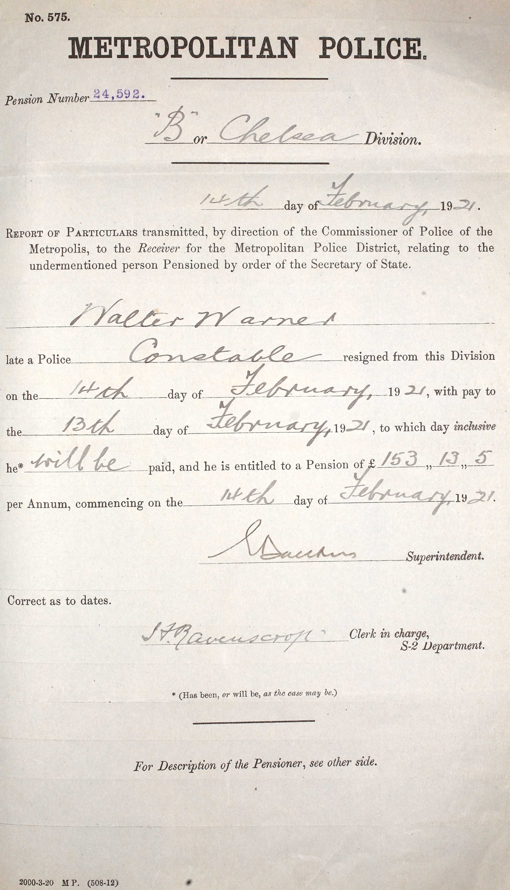

Walter Chapman Warner 1872 - c1955
[ Home ] | [ Calendar ] | [ Surnames Index ] | [ Errors ] | [ Family History ]A constable in the metropolitan police officer and the child of William Warner (a builder's labourer) and Sarah Chapman, Walter Warner, the first cousin three-times-removed on the father's side of Nigel Horne, was born in St Peters, Thanet, Kent, England on 16 May 18721,2, was baptised there on 7 Jul 1872 was married twice - to Ellen Dudley (c. Aug 1895 in Thanet, Kent, England) Beatrice4. He had 1 child with Ellen Dudley, Ellen.
During his life, he was living at Burtons Cottages, St Peters in Thanet on 3 Apr 18817; at Magdala Road, St Peters in Thanet on 5 Apr 18918 - less than a mile from his aunt Elizabeth Warner who was living at 194 Reading Street, St Peters in Thanet; at 26 Rawlings Street, Chelsea, London, England on 2 Apr 19116; and at 2 Hanover Road, Tunbridge Wells, Kent on 29 Sept 19391.
He died c. Feb 1955 in Tonbridge, Kent, England3 and was buried in Kent on 5 Feb 1955 (a drizzly day)5.
Parents
- William Robert was born c. 1837
- Sarah was born in 1844
Children
- Ellen was born in 1900
Citations
- 1939 Register - Findmypast (was recorded at this address)
- Kent, Canterbury Archdeaconry baptisms 1538-1912 - Findmypast
- England & Wales deaths 1837-2007 - Findmypast
- England & Wales marriages 1837-2008 - Findmypast
- https://www.deceasedonline.com/servlet/GSDOSearch?DetsView=Summary&src=ext&fileid=75399
- 1911 Census for England & Wales - Findmypast (was age 38 and the head of the household)
- 1881 England, Wales & Scotland Census - Findmypast (was age 9 and the son of the head of the household)
- 1891 England, Wales & Scotland Census - Findmypast (was age 18 and the son of the head of the household)
Media
Walter Chapman Warner - Met Police Register of Lea
1911 UK Census - page 1

1911 UK Census - page 2

Walter Warner - Police Discharge 1

Walter Warner - Police Discharge 2
Kent, Canterbury Archdeaconry baptisms 1538-1912 - GBPRS/CANT/B/96351634
England & Wales births 1837-2006 - BMD/B/1872/2/AZ/000785/072
England & Wales marriages 1837-2008 Transcription - BMD-M-1895-3-AZ-000348-349
1911 Census for England & Wales - GBC/1911/RG14/00390/0551/1
1939 Register Transcription - TNA-R39-1777-1777A-011-32
England, Births & Baptisms 1538-1975 Transcription - R_884663737
1939 Register - TNA/R39/1777/1777A/011/31
Family Tree

Map
Generated by ged2site. Last updated on Jul 3, 2024
Known Issues
Census information missing between Census UK 1891 and Census UK 1911